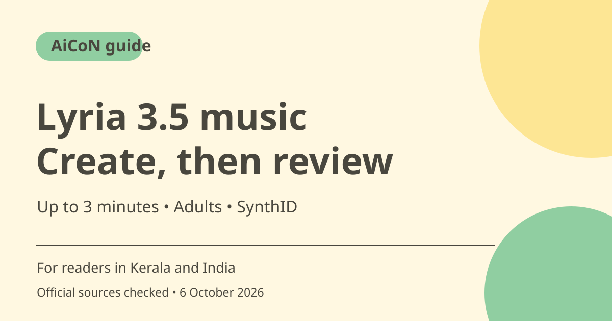

Lyria 3.5 in Gemini: make music, check limits and rights
Google's Lyria 3.5 music feature in Gemini turns text or photos into tracks up to three minutes long, with vocals or instrumentals. Access is for adults where Gemini is available, and limits apply. Review account access and rights before using a generated track in public or commercial work.

What does Lyria 3.5 do?
Google's music-generation page describes making tracks from a mood, idea or photo, with genre choices and templates. It calls Lyria 3.5 its best-sounding music model, but that is a provider claim rather than an independent listening result here. A generated song is a starting point to review, not a guarantee of the exact musical result you described.
Who can try it in Kerala and India?
The official page says music generation follows countries where the Gemini app is available and users must be 18 or older. Check your account and the current feature interface rather than assuming every app login has identical access. Work or education accounts can have additional controls. This guide does not promise a specific free quota or universal account entitlement.
Prompt with useful details
Specify genre, mood, tempo feel, instruments and whether you want vocals. For a Malayalam-themed idea, describe what you mean and inspect the result rather than claiming verified Malayalam lyric quality. A festival greeting, instrumental background or song draft can be a low-risk test when it uses your own text or images.
Track length and creative controls
The product page lists tracks up to three minutes and controls such as vocals versus instrumental and genre selection. Up to is a maximum description, not a promise that every request produces the full duration. Start with one clear concept, listen to the result and adjust one part of your prompt at a time.
SynthID and checking audio
Google says generated Gemini tracks contain the imperceptible SynthID watermark. It also describes uploading audio and asking whether it was made with Google AI, using watermark detection and reasoning. Do not treat that as a universal proof of authorship for every file from every AI vendor. Explain AI use honestly when sharing a generated track.
Costs, copyright and sensible use
The checked page says limits apply without specifying a complete price or plan allowance. Confirm your plan before relying on repeated generation. Use media you have permission to upload, avoid presenting a track as a real artist's recording and review applicable usage terms before commercial release. Generated audio is not a licence to someone else's lyrics, recording or identity.
How to use it, step by step
- Open the official Gemini music-generation page and check age, country and account access conditions.
- Use the Gemini app on web or mobile and find the music-generation option offered to your account.
- Choose a template or describe the genre, mood, instruments and vocal/instrumental preference.
- If uploading an image, use one you own or are allowed to share. Keep other people's private images out of the prompt.
- Generate a test track and listen fully, checking lyrics, sound and whether the result matches your request.
- Refine the prompt and review again. Check current usage limits before repeated generations.
- Before sharing or publishing, review rights and terms, describe the AI involvement honestly and do not claim watermark detection proves all aspects of ownership.
Cost, eligibility and limits
| Access | 18+ and countries where Gemini is available, subject to account and feature availability. |
|---|---|
| Duration | Up to three minutes per the product page; vocals or instrumental and genre controls described. |
| Price | The checked page says limits apply but gives no complete price or free quota. Check your plan. |
| Rights | Use permitted inputs and review commercial-use terms. SynthID is a watermark, not a rights clearance. |
Frequently asked questions
Can everyone use it without limits?
No. The page says limits apply; verify your account and plan.
Can I generate instrumental music?
Google lists vocals versus instrumental as a creative choice.
Does SynthID mean I own all music rights?
No. Watermarking identifies AI content; rights and permitted use need separate review.
Official sources
Checked 6 October 2026. Features and prices can change. This is a guide, not a personal product test.